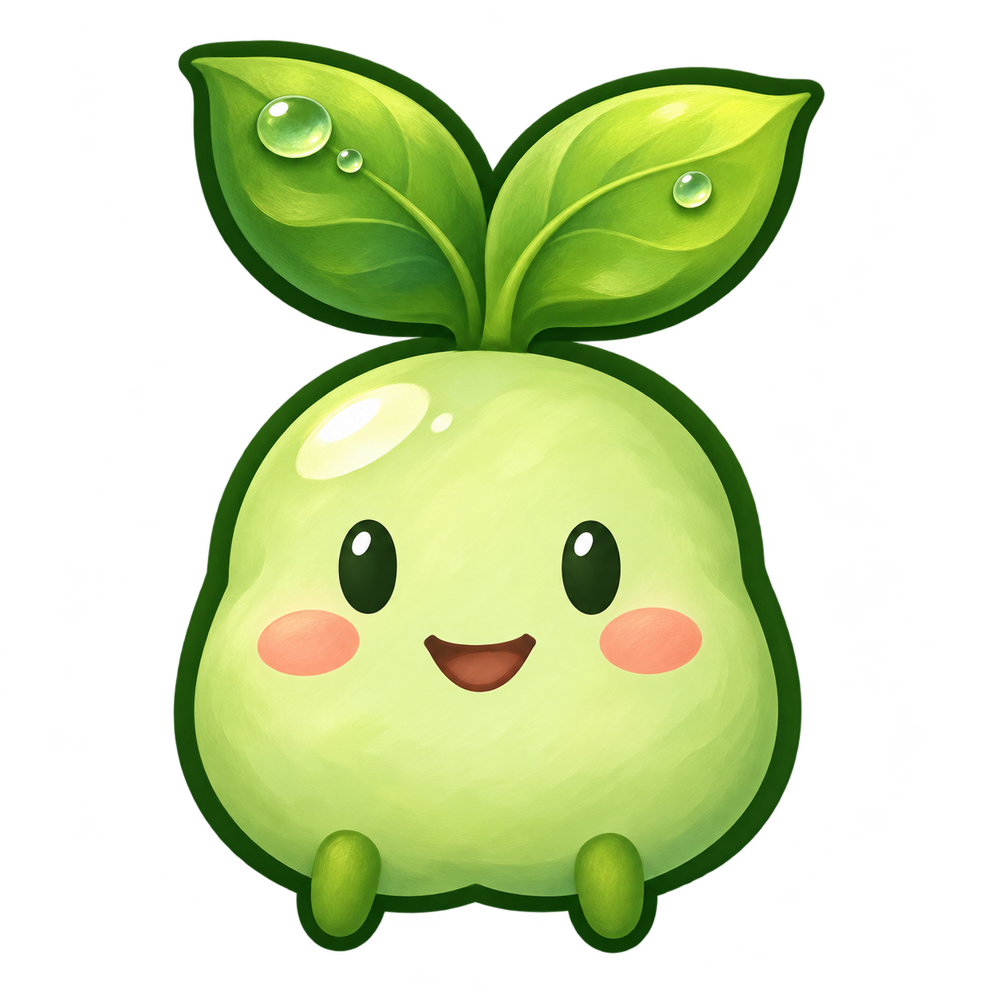
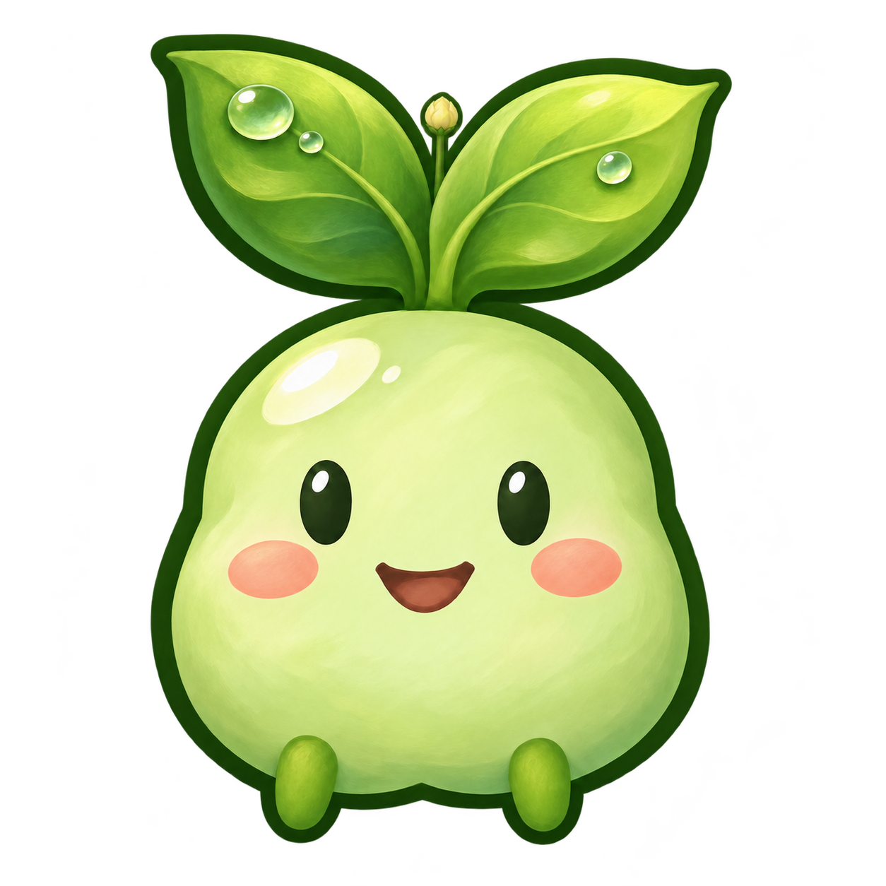
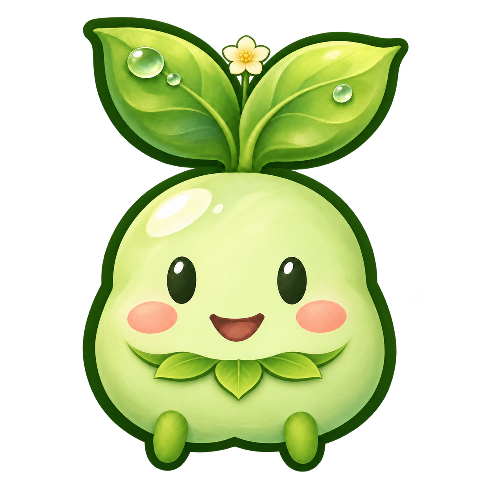
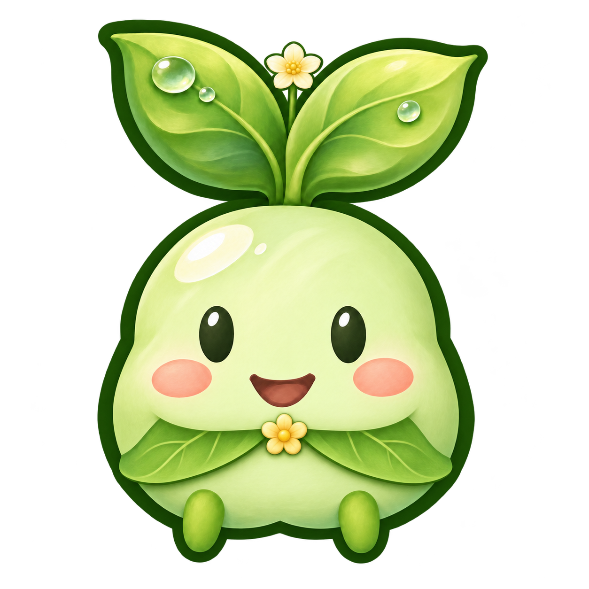
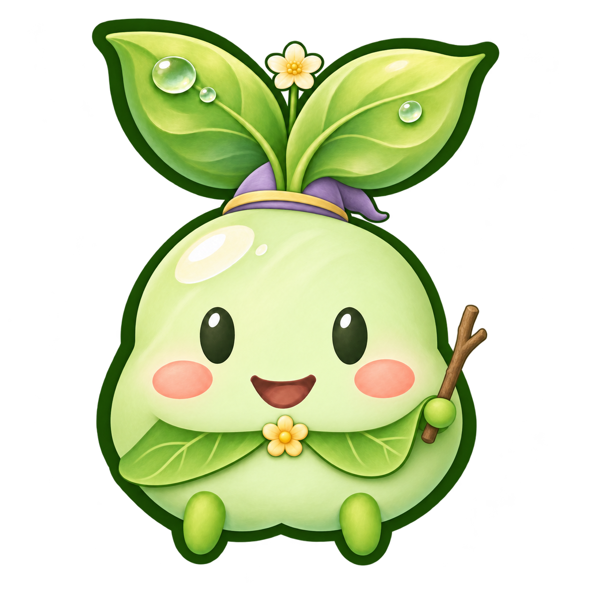
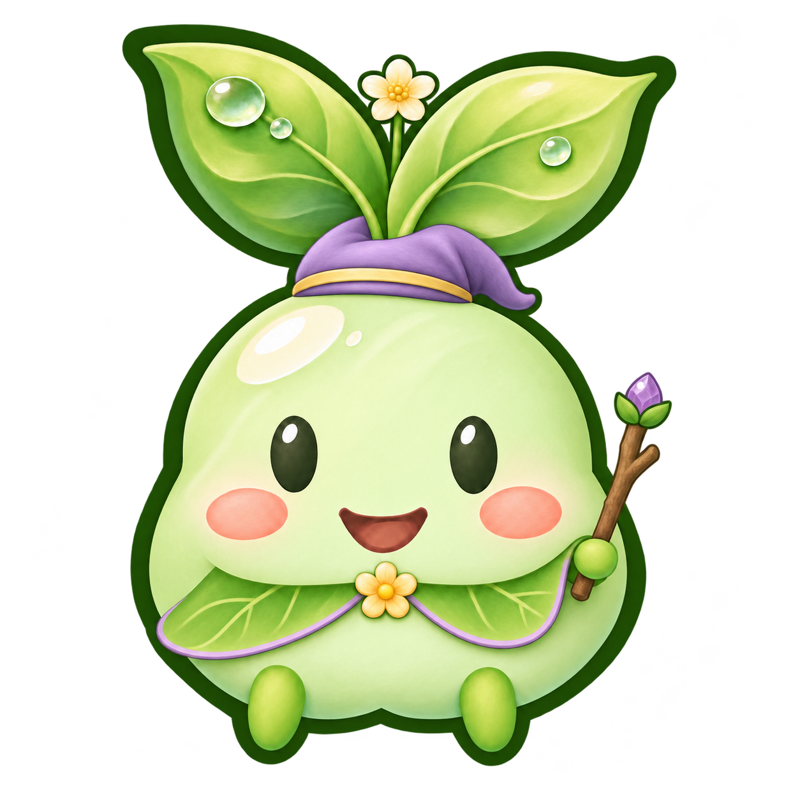

嫩芽伙伴
Lv.1 起
最初的两片嫩叶，圆圆的芽芽。
01-sprout.png · 打开原图八级形态始终保留同一张脸、圆圆的嫩芽身体、两片大叶子和小脚。先长花苞、开小花，再逐级添上披肩、学徒帽、木杖与小书。最后一级是一位花园法师，游戏内只展示当前形态。

Lv.1 起
最初的两片嫩叶，圆圆的芽芽。
01-sprout.png · 打开原图
Lv.3 起
两片叶子之间，长出一颗小花苞。
02-bud.png · 打开原图
Lv.5 起
小花轻轻绽开，添上几片叶领。
03-bloom.png · 打开原图
Lv.8 起
叶领长成短披肩，扣上一朵小花。
04-cape.png · 打开原图
Lv.11 起
戴上小小的学徒帽，拿起朴素木杖。
05-apprentice.png · 打开原图
Lv.14 起
披肩添上紫边，木杖结出一颗小晶石。
06-mage.png · 打开原图Lv.18 起
衣边多了叶纹，带上自己的小书。
07-scholar.png · 打开原图Lv.22 起
帽檐与披肩绣上花叶，依旧是熟悉的芽芽。
08-sage.png · 打开原图